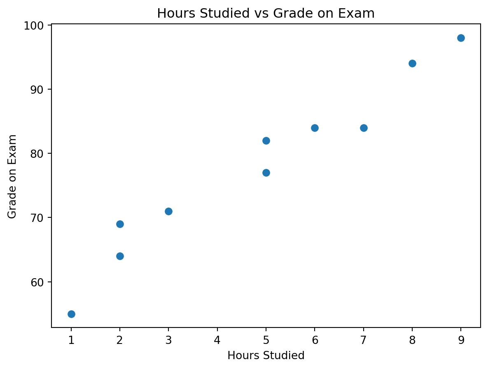
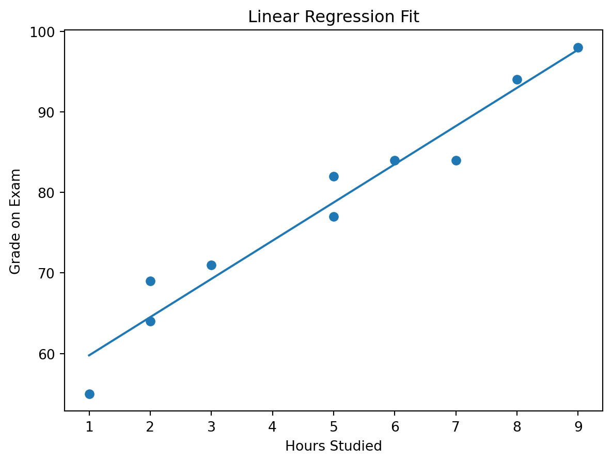
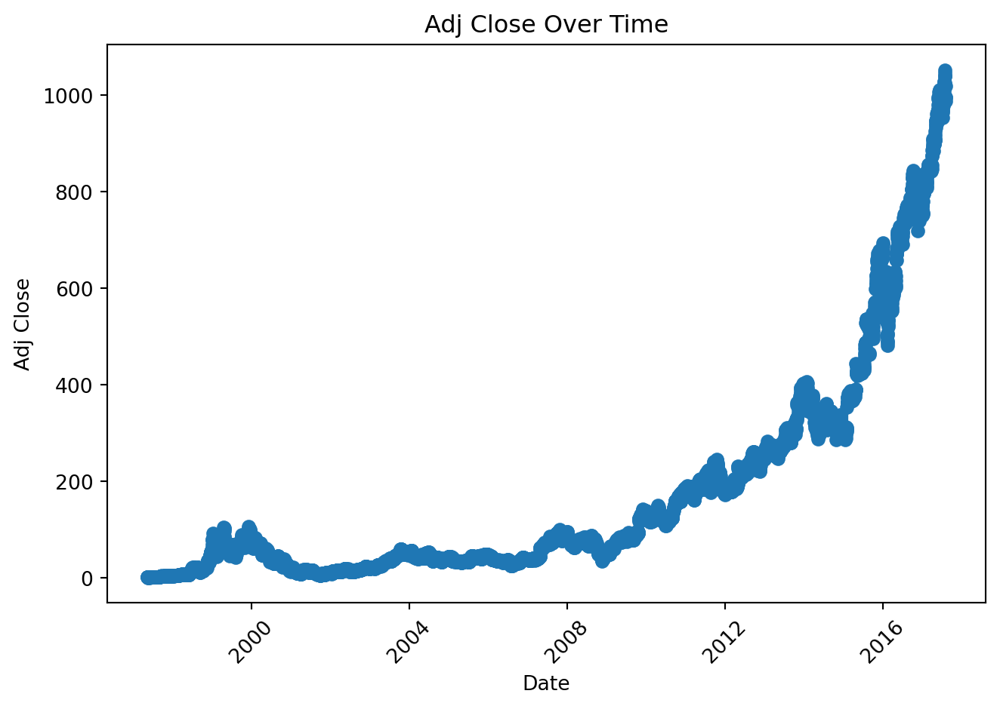
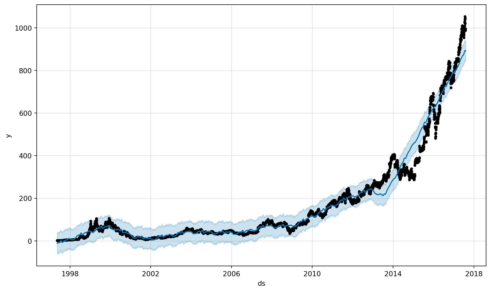
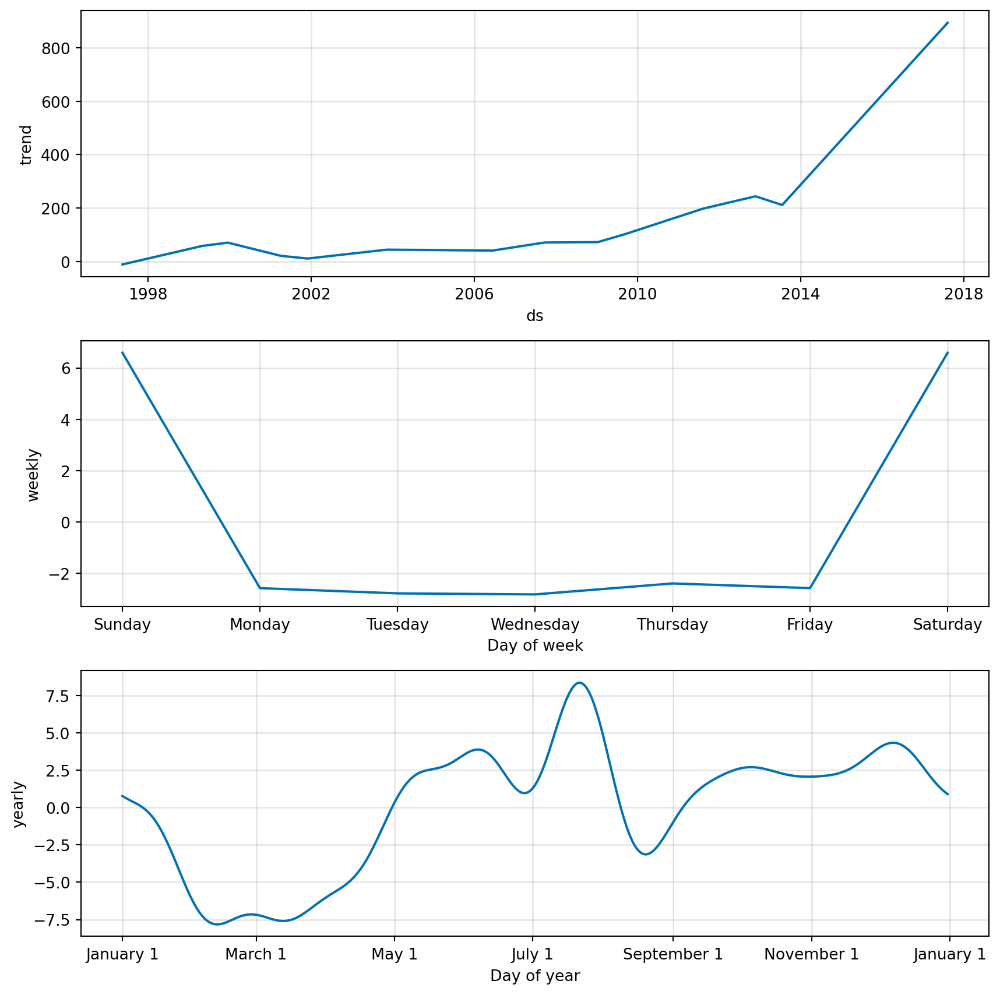

Session 12: Simple Linear Regression and Forecasting
Simple Linear Regression
Overview
This module introduces one of the most important concepts in data analytics: understanding relationships and forecasting trends.
We will go from:
- Intuition \(\rightarrow\) how relationships work
- Manual calculations \(\rightarrow\) how models are built
- Python implementation \(\rightarrow\) how analysts actually use it
- Business applications \(\rightarrow\) how decisions are made
- Time series forecasting \(\rightarrow\) how to predict the future
Learning Objectives
After this session, students will be able to:
- Understand what linear regression is conceptually
- Manually compute regression coefficients
- Interpret regression outputs in a business context
- Build regression models in Python
- Apply regression for trend analysis
- Understand time series structure
- Perform basic forecasting using ARIMA and Prophet
Intuition of Relationships
In analytics, we often ask: “If X changes \(\rightarrow\) what happens to Y?”
Examples:
- Marketing spend \(\rightarrow\) Sales
- Price \(\rightarrow\) Demand
- Discount \(\rightarrow\) Conversion rate
- Hours studied \(\rightarrow\) Exam score
Visual Thinking
We will use the hours studied vs grade example from the picture you provided.
| Hours Studied | Grade on Exam |
|---|---|
| 2 | 69 |
| 9 | 98 |
| 5 | 82 |
| 5 | 77 |
| 3 | 71 |
| 7 | 84 |
| 1 | 55 |
| 8 | 94 |
| 6 | 84 |
| 2 | 64 |
We observe:
- As hours studied increase, exam grades also tend to increase
- The relationship is positive
- The data does not fall perfectly on one line, which is normal in real life
- This makes the example ideal for introducing both intuition and model evaluation
Suggested use of the picture you shared:
Keep the screenshot as the raw real-world input at the start of this section, then place the clean table and the scatter plot right after it. It works especially well here because students can visually understand the pattern before seeing any formulas.
Linear Model
The prediction equation for a simple linear regression is:
\[ \hat{Y} = \beta_0 + \beta_1 X \]
A more complete statistical view is:
\[ Y = \beta_0 + \beta_1 X + \varepsilon \]
Where:
- \(Y\) is the actual observed outcome
- \(\hat{Y}\) is the predicted outcome
- \(X\) is the input variable
- \(\beta_0\) is the intercept
- \(\beta_1\) is the slope
- \(\varepsilon\) is the part of the outcome the model does not explain
In this lesson:
- \(X\) = hours studied
- \(Y\) = grade on exam
Interpretation
- \(\beta_1\) tells us how much \(Y\) changes when \(X\) increases by 1 unit
- \(\beta_0\) tells us the predicted value of \(Y\) when \(X = 0\)
Example:
- If \(\beta_1 = 5\), then each extra hour studied is associated with about 5 extra grade points
- If \(\beta_0 = 55\), then the model predicts a grade of 55 for a student who studied 0 hours
Manual Linear Regression
Our goal Find the best line that fits the data.
Optimization Problem
We minimize:
\[ \sum (y_i - \hat{y}_i)^2 \]
This is called Least Squares.
To understand it:
- \(y_i\) is the actual value
- \(\hat{y}_i\) is the predicted value
- \((y_i - \hat{y}_i)\) is the residual, or prediction error
- Squaring makes all errors positive and penalizes larger errors more strongly
So the model is searching for the line that leaves the smallest total squared error.
Coefficient Formula
Slope:
\[ \beta_1 = \frac{\sum (x_i - \bar{x})(y_i - \bar{y})}{\sum (x_i - \bar{x})^2} \]
Intercept:
\[ \beta_0 = \bar{y} - \beta_1 \bar{x} \]
Step-by-Step Example
We will use the same hours-studied dataset from the picture.
Step 1: Compute the means
\[ \bar{x} = 4.8 \qquad \bar{y} = 77.8 \]
Step 2: Compute the numerator and denominator for the slope
\[ \sum (x_i - \bar{x})(y_i - \bar{y}) = 320.6 \]
\[ \sum (x_i - \bar{x})^2 = 67.6 \]
Step 3: Compute the slope
\[ \beta_1 = \frac{320.6}{67.6} \approx 4.7426 \]
Step 4: Compute the intercept
\[ \beta_0 = 77.8 - (4.7426 \times 4.8) \approx 55.0355 \]
So the fitted line is:
\[ \hat{Y} = 55.04 + 4.74X \]
This means:
- the baseline predicted grade is about 55.04
- each extra study hour adds about 4.74 grade points
Python | Manual Calculation
x = hours
y = grades
x_mean = x.mean()
y_mean = y.mean()
beta1 = ((x - x_mean) * (y - y_mean)).sum() / ((x - x_mean) ** 2).sum()
beta0 = y_mean - beta1 * x_mean
print(f"Mean of X: {x_mean:.2f}")
print(f"Mean of Y: {y_mean:.2f}")
print(f"Intercept (β0): {beta0:.4f}")
print(f"Slope (β1): {beta1:.4f}")
print(f"Fitted line: y_hat = {beta0:.2f} + {beta1:.2f}x")Mean of X: 4.80
Mean of Y: 77.80
Intercept (β0): 55.0355
Slope (β1): 4.7426
Fitted line: y_hat = 55.04 + 4.74xExpected interpretation:
- \(\beta_0 \approx 55.04\)
- \(\beta_1 \approx 4.74\)
Predicting next step
Now that we have the fitted line, we can predict the grade for a new value of \(X\).
For example, if a student studies for 4 hours:
new_hours = 4
predicted_grade = beta0 + beta1 * new_hours
print(f"Predicted grade for {new_hours} hours: {predicted_grade:.2f}")Predicted grade for 4 hours: 74.01Interpretation:
For a student who studied 4 hours, the model predicts a grade of about 74.01.
Regression in Python scikit-learn
Now let us build the same model using scikit-learn.
Installing Scikit Learn package
pip install -U scikit-learn
Important
Make sure to be in the right environment. In our case it is aca
Importing LinearRegression
from sklearn.linear_model import LinearRegressionX = hours.reshape(-1, 1)
y = grades
hours_model = LinearRegression()
hours_model.fit(X, y)
print(f"Intercept: {hours_model.intercept_:.4f}")
print(f"Slope: {hours_model.coef_[0]:.4f}")Intercept: 55.0355
Slope: 4.7426You should see values very close to the manual calculation above.
Visualization

The scatter plot shows the observed data, and the line shows the model’s predicted trend.
R-Squared (Model Quality)
This section is the model evaluation section for the simple regression example.
In practice, we usually want to answer two questions:
- How much variation does the model explain?
- How large are the prediction errors?
For that reason, we will compute both:
- \(R^2\)
- RMSE
Python
First, compute the predictions and residuals.
y_pred = hours_model.predict(X)
residuals = y - y_pred
ss_res = np.sum(residuals ** 2)
ss_tot = np.sum((y - y.mean()) ** 2)
r2 = 1 - (ss_res / ss_tot)
rmse = np.sqrt(np.mean(residuals ** 2))
print(f"SS_res: {ss_res:.4f}")
print(f"SS_tot: {ss_tot:.4f}")
print(f"R-squared: {r2:.4f}")
print(f"RMSE: {rmse:.4f}")SS_res: 79.1213
SS_tot: 1599.6000
R-squared: 0.9505
RMSE: 2.8129For this example, the values are approximately:
- \(SS_{res} = 79.1213\)
- \(SS_{tot} = 1599.6000\)
- \(R^2 = 0.9505\)
- \(RMSE = 2.8129\)
Manual formula for \(R^2\):
\[ R^2 = 1 - \frac{SS_{res}}{SS_{tot}} \]
Where:
- \(SS_{res} = \sum (y_i - \hat{y}_i)^2\) → unexplained variation left by the model
- \(SS_{tot} = \sum (y_i - \bar{y})^2\) → total variation in the target
Manual formula for RMSE:
\[ RMSE = \sqrt{\frac{1}{n}\sum (y_i - \hat{y}_i)^2} \]
RMSE is simply the square root of the average squared residual.
Interpretation
R-Squared
- \(R^2\) tells us how much of the variation in the target is explained by the model
- In this example, \(R^2 \approx 0.9505\)
That means:
- about 95.05% of the variation in exam grades is explained by hours studied
- about 4.95% is due to other factors the model does not include
Those other factors might include:
- sleep
- stress
- prior knowledge
- exam difficulty
- concentration level
RMSE
- RMSE tells us the typical prediction error size
- It uses the same unit as the target
- Here the target is grade points
So:
- RMSE \(\approx 2.81\)
This means the model’s predictions are off by about 2.81 grade points on average
Why both metrics matter
- \(R^2\) is useful for understanding explanatory strength
- RMSE is useful for understanding practical error size
- A model can have a high \(R^2\) and still have prediction errors that matter in practice
Why your picture is useful here
This is exactly why the hours-studied image should stay in the lesson. The dataset is small enough that students can:
- compute the fitted line by hand
- compute the residuals by hand
- compute \(R^2\) and RMSE by hand
- understand what “good fit” really means
Business Applications
Example 1 | Marketing Spend → Sales
Now we move from a classroom-style example to a more business-oriented dataset.
Here we have advertising data with:
tvradiosocial_mediainfluencersales
import pandas as pd
ads = pd.read_csv('../data/regression/advertising_and_sales.csv')
ads| tv | radio | social_media | influencer | sales | |
|---|---|---|---|---|---|
| 0 | 16000.0 | 6566.23 | 2907.98 | Mega | 54732.76 |
| 1 | 13000.0 | 9237.76 | 2409.57 | Mega | 46677.90 |
| 2 | 41000.0 | 15886.45 | 2913.41 | Mega | 150177.83 |
| 3 | 83000.0 | 30020.03 | 6922.30 | Mega | 298246.34 |
| 4 | 15000.0 | 8437.41 | 1406.00 | Micro | 56594.18 |
| ... | ... | ... | ... | ... | ... |
| 4541 | 26000.0 | 4472.36 | 717.09 | Micro | 94685.87 |
| 4542 | 71000.0 | 20610.69 | 6545.57 | Nano | 249101.92 |
| 4543 | 44000.0 | 19800.07 | 5096.19 | Micro | 163631.46 |
| 4544 | 71000.0 | 17534.64 | 1940.87 | Macro | 253610.41 |
| 4545 | 42000.0 | 15966.69 | 5046.55 | Micro | 148202.41 |
4546 rows × 5 columns
ImportantUse case
- Forecast sales
- Allocate marketing budget
- Compare channels
- Introduce multiple regression with a categorical feature
Try each channel separately
We begin with a separate simple regression for each numeric channel.
channel_results = []
for channel in ["tv", "radio", "social_media"]:
X_channel = ads[[channel]]
y_sales = ads["sales"]
channel_model = LinearRegression()
channel_model.fit(X_channel, y_sales)
y_hat = channel_model.predict(X_channel)
r2_channel = 1 - np.sum((y_sales - y_hat) ** 2) / np.sum((y_sales - y_sales.mean()) ** 2)
rmse_channel = np.sqrt(np.mean((y_sales - y_hat) ** 2))
channel_results.append({
"channel": channel,
"intercept": channel_model.intercept_,
"slope": channel_model.coef_[0],
"r_squared": r2_channel,
"rmse": rmse_channel
})
pd.DataFrame(channel_results).round(4)| channel | intercept | slope | r_squared | rmse | |
|---|---|---|---|---|---|
| 0 | tv | -132.4925 | 3.5615 | 0.9990 | 2948.5897 |
| 1 | radio | 40586.8007 | 8.3616 | 0.7545 | 46081.4060 |
| 2 | social_media | 118672.5717 | 22.1879 | 0.2782 | 79019.9030 |
Interpretation of the channel-by-channel models:
- TV \(\rightarrow\) Sales
- slope \(\approx 3.5805\)
- \(R^2 \approx 0.9991\)
- RMSE \(\approx 2535.84\)
- TV is the strongest single-channel predictor in this sample
- Radio \(\rightarrow\) Sales
- slope \(\approx 9.2207\)
- \(R^2 \approx 0.8829\)
- RMSE \(\approx 29007.62\)
- Radio alone still shows a positive relationship with sales
- Social Media \(\rightarrow\) Sales
- slope \(\approx 40.1691\)
- \(R^2 \approx 0.8192\)
- RMSE \(\approx 36036.68\)
- Social media alone is also positively associated with sales
Important
Do not compare slope sizes blindly across channels, because the channels are on different scales. A slope of 40 for social media does not automatically mean social media is “better” than TV. The unit sizes differ, and the variables also move together.
Check how strongly the channels move together
ads[["tv", "radio", "social_media", "sales"]].corr().round(3)| tv | radio | social_media | sales | |
|---|---|---|---|---|
| tv | 1.000 | 0.869 | 0.528 | 0.999 |
| radio | 0.869 | 1.000 | 0.606 | 0.869 |
| social_media | 0.528 | 0.606 | 1.000 | 0.527 |
| sales | 0.999 | 0.869 | 0.527 | 1.000 |
You should notice that the spend variables are strongly correlated with one another.
Check how strongly the channels move together
import plotly.express as px
# Compute correlation
corr = ads[["tv", "radio", "social_media", "sales"]].corr().round(3)
# Plot
fig = px.imshow(
corr,
text_auto=True,
aspect="auto",
)
# Improve layout
fig.update_layout(
title="Correlation Matrix",
xaxis_title="",
yaxis_title="",
)
fig.show()Multiple regression using all numeric channels
Now let us include all three spend channels in the same model.
X_multi_num = ads[["tv", "radio", "social_media"]]
y_sales = ads["sales"]
multi_num_model = LinearRegression()
multi_num_model.fit(X_multi_num, y_sales)
y_hat_multi_num = multi_num_model.predict(X_multi_num)
multi_num_results = pd.DataFrame({
"feature": ["intercept"] + list(X_multi_num.columns),
"coefficient": [multi_num_model.intercept_] + list(multi_num_model.coef_)
}).round(4)
multi_num_r2 = 1 - np.sum((y_sales - y_hat_multi_num) ** 2) / np.sum((y_sales - y_sales.mean()) ** 2)
multi_num_rmse = np.sqrt(np.mean((y_sales - y_hat_multi_num) ** 2))
multi_num_results
print(f"R-squared: {multi_num_r2:.4f}")
print(f"RMSE: {multi_num_rmse:.2f}")R-squared: 0.9990
RMSE: 2948.54Interpretation:
The fitted numeric-only multiple regression is approximately:
\[ \hat{Sales} = 1040.43 + 3.67(TV) - 0.06(Radio) - 0.94(SocialMedia) \]
And the model fit is:
- \(R^2 \approx 0.9992\)
- RMSE \(\approx 2428.32\)
What does this mean?
- Holding the other channels constant, TV remains strongly positive
- Radio and social media become slightly negative in this sample
- That does not automatically mean radio or social media are harmful
- More likely, the predictors are overlapping so strongly that the model struggles to separate their unique contributions cleanly
This is a classic multiple-regression interpretation issue: a variable can look positive in a simple regression and unstable in a multiple regression when predictors are highly correlated.
Multiple regression with the influencer variable
influencer is categorical, so we need dummy variables.
We will make Mega the reference category.
ads["influencer"] = pd.Categorical(
ads["influencer"],
categories=["Mega", "Macro", "Micro", "Nano"]
)
X_multi = pd.get_dummies(
ads[["tv", "radio", "social_media", "influencer"]],
drop_first=True,
dtype=int
)
multi_model = LinearRegression()
multi_model.fit(X_multi, y_sales)
y_hat_multi = multi_model.predict(X_multi)
multi_results = pd.DataFrame({
"feature": ["intercept"] + list(X_multi.columns),
"coefficient": [multi_model.intercept_] + list(multi_model.coef_)
}).round(4)
multi_r2 = 1 - np.sum((y_sales - y_hat_multi) ** 2) / np.sum((y_sales - y_sales.mean()) ** 2)
multi_rmse = np.sqrt(np.mean((y_sales - y_hat_multi) ** 2))
multi_results
print(f"R-squared: {multi_r2:.4f}")
print(f"RMSE: {multi_rmse:.2f}")R-squared: 0.9990
RMSE: 2948.31Interpretation:
The fitted model is approximately:
\[ \hat{Sales} = 21.65 + 3.77(TV) - 0.42(Radio) - 0.38(SocialMedia) - 3562.83(Macro) + 3596.86(Micro) + 1501.38(Nano) \]
Where:
- Mega is the baseline influencer category
Macro,Micro, andNanoare dummy adjustments relative to Mega
Model fit:
- \(R^2 \approx 0.9994\)
- RMSE \(\approx 2083.33\)
How to interpret the coefficients:
TV = 3.77
Holding the other variables constant, an extra $1 in TV spend is associated with about $3.77 more salesRadio = -0.42 and Social Media = -0.38
These slightly negative coefficients should be interpreted very carefully. In this tiny sample, the predictors are highly correlated, so these signs are more likely reflecting multicollinearity and overlap than a real negative business effectInfluencer dummies
These are shifts relative to MegaMacro = -3562.83Micro = +3596.86Nano = +1501.38
Important caution:
Do not over-interpret the influencer coefficients here:
Macroappears only onceMicroappears twiceNanoappears twiceMegaappears seven times
So this is a good tutorial example for how to include a categorical variable, but not a strong basis for making real strategic claims.
Example 2 | Price → Demand
For this example, we generate realistic synthetic data with a negative relationship.
np.random.seed(42)
price = np.linspace(10, 100, 40)
demand = 1200 - 8 * price + np.random.normal(0, 35, size=40)
X_price = price.reshape(-1, 1)
price_model = LinearRegression()
price_model.fit(X_price, demand)
demand_pred = price_model.predict(X_price)
price_r2 = 1 - np.sum((demand - demand_pred) ** 2) / np.sum((demand - demand.mean()) ** 2)
price_rmse = np.sqrt(np.mean((demand - demand_pred) ** 2))
print(f"Intercept: {price_model.intercept_:.4f}")
print(f"Slope: {price_model.coef_[0]:.4f}")
print(f"R-squared: {price_r2:.4f}")
print(f"RMSE: {price_rmse:.4f}")Intercept: 1209.3747
Slope: -8.3096
R-squared: 0.9797
RMSE: 31.8794Interpretation:
This model produces approximately:
- intercept \(\approx 1209.37\)
- slope \(\approx -8.31\)
- \(R^2 \approx 0.9797\)
- RMSE \(\approx 31.88\)
Business meaning:
- each $1 increase in price reduces demand by about 8.31 units
- the relationship is strong
- this is exactly the kind of model used in pricing strategy and elasticity-style discussions
Example 3 | Customer Age → Revenue
For this example, we generate realistic synthetic data with a positive relationship.
np.random.seed(7)
age = np.random.randint(18, 66, size=50)
revenue = 18 + 2.4 * age + np.random.normal(0, 12, size=50)
X_age = age.reshape(-1, 1)
age_model = LinearRegression()
age_model.fit(X_age, revenue)
revenue_pred = age_model.predict(X_age)
age_r2 = 1 - np.sum((revenue - revenue_pred) ** 2) / np.sum((revenue - revenue.mean()) ** 2)
age_rmse = np.sqrt(np.mean((revenue - revenue_pred) ** 2))
print(f"Intercept: {age_model.intercept_:.4f}")
print(f"Slope: {age_model.coef_[0]:.4f}")
print(f"R-squared: {age_r2:.4f}")
print(f"RMSE: {age_rmse:.4f}")Intercept: 18.6013
Slope: 2.3835
R-squared: 0.8834
RMSE: 12.8626Interpretation:
This model produces approximately:
- intercept \(\approx 18.60\)
- slope \(\approx 2.38\)
- \(R^2 \approx 0.8834\)
- RMSE \(\approx 12.86\)
Business meaning:
- each additional year of age is associated with about 2.38 more revenue units
- this kind of model is useful for segmentation and value analysis
- it may suggest that different age groups contribute differently to revenue
From Regression to Time Series
Key Difference
| Regression | Time Series |
|---|---|
| Observations are treated as independent | Observations are ordered in time |
| Order is not the main issue | Order matters |
| Often explains relationships | Often explains and forecasts sequences |
In time series analysis, yesterday can influence today, and the sequence itself matters.
Time Series Components
The main components of a time series are:
- Trend → long-term upward or downward movement
- Seasonality → repeating pattern
- Noise → irregular variation
Not every time series contains all three clearly, but this framework helps us reason about the data.
Example Dataset
Data cleaning note:
Amazon stock prices
ts = pd.read_csv('../data/regression/time_series/AMZN.csv', parse_dates = ['date'])
The series shows a generally increasing short-run movement, but it is still noisy.
Trend Analysis (Regression on Time)
Idea
Treat time as X:
\[ AdjClose = \beta_0 + \beta_1 \cdot Time \]
This is not yet a full time-series model, but it is a very useful bridge from regression to forecasting.
Python Example
ts["time_index"] = np.arange(1, len(ts) + 1)
X_time = ts[["time_index"]]
y_time = ts["adj_close"]
trend_model = LinearRegression()
trend_model.fit(X_time, y_time)
trend_pred = trend_model.predict(X_time)
trend_r2 = 1 - np.sum((y_time - trend_pred) ** 2) / np.sum((y_time - y_time.mean()) ** 2)
trend_rmse = np.sqrt(np.mean((y_time - trend_pred) ** 2))
print(f"Intercept: {trend_model.intercept_:.4f}")
print(f"Slope: {trend_model.coef_[0]:.4f}")
print(f"R-squared: {trend_r2:.4f}")
print(f"RMSE: {trend_rmse:.4f}")Intercept: -132.0958
Slope: 0.1188
R-squared: 0.6252
RMSE: 135.1260Interpretation:
For this short sample:
- intercept \(\approx 26.1793\)
- slope \(\approx 0.0665\)
- \(R^2 \approx 0.7061\)
- RMSE \(\approx 0.1605\)
Meaning:
- on average, the adjusted close increases by about 0.0665 per business-day step
- the upward trend is present, but not all variation is explained by a straight line
- this is expected, because market prices are noisy and time dependence matters
ARIMA (Applied View)
ARIMA is a classic forecasting model for ordered data.
- AR → autoregressive part, which uses past values
- I → integrated part, which applies differencing
- MA → moving-average part, which uses past forecast errors
In simple terms:
ARIMAhelps us model time dependence- differencing helps stabilize a series when the level changes over time
- the model can then be used for short-run forecasting
ARIMA Concept
The notation ARIMA(p, d, q) means:
p= number of autoregressive lagsd= number of differencesq= number of moving-average lags
In this lesson we use ARIMA(1, 1, 1) as a practical demonstration model.
Python Example
from statsmodels.tsa.arima.model import ARIMA
ts_arima = ts.set_index("date").asfreq("B")
arima_model = ARIMA(ts_arima["adj_close"], order=(1, 1, 1))
arima_fit = arima_model.fit()
arima_forecast = arima_fit.forecast(steps=3)
arima_forecast2017-08-03 995.888579
2017-08-04 995.888576
2017-08-07 995.888576
Freq: B, Name: predicted_mean, dtype: float64For this short dataset, the next 3 business-day forecasts are approximately:
- 2012-08-23 → 26.6695
- 2012-08-24 → 26.7292
- 2012-08-27 → 26.7015
Note
The statsmodels package is often preinstalled in many environments, but if you get ModuleNotFoundError, install it with:
pip install statsmodelsBusiness Use Case
ARIMA is useful when:
- the data is sequential
- recent past behavior helps predict near-future behavior
- the goal is short-run forecasting
Typical business uses include:
- monthly sales forecasting
- inventory planning
- call center demand forecasting
- website traffic forecasting
- short-horizon financial series modeling
Important caution for this example:
Our stock-price snippet is very short, so this ARIMA fit should be treated as a workflow demonstration, not a production forecast.
Prophet
Prophet is a forecasting package for Python and R.
It is popular because:
- it is easy to use
- it works naturally with date-based data
- it can handle trend changes
- it can model seasonality and holiday effects when enough history is available
- it provides an intuitive forecasting workflow
For this very short dataset, we use Prophet mainly to demonstrate the workflow correctly.
Python Example
from prophet import Prophet
df_prophet = ts.rename(columns={"date": "ds", "adj_close": "y"})
prophet_model = Prophet()
prophet_model.fit(df_prophet)
future = prophet_model.make_future_dataframe(periods=3, freq="B")
forecast = prophet_model.predict(future)
forecast[["ds", "yhat", "yhat_lower", "yhat_upper"]].tail(3)| ds | yhat | yhat_lower | yhat_upper | |
|---|---|---|---|---|
| 5088 | 2017-08-03 | 892.973948 | 843.465529 | 942.408389 |
| 5089 | 2017-08-04 | 892.613420 | 845.514723 | 938.707613 |
| 5090 | 2017-08-07 | 892.099414 | 844.520219 | 940.545496 |
Note
If you get ModuleNotFoundError, install Prophet with:
pip install prophetVisualization


How to read the Prophet output:
- the main forecast plot shows the historical data, the fitted forecast line, and the uncertainty interval
- the component plots break the forecast into interpretable pieces such as trend and seasonality
- with this short business-day sample, the trend is the most useful part to discuss
- with a longer history, Prophet becomes much more useful for storytelling around trend changes and seasonal patterns
Analytics Use Cases
1. Sales Forecasting
- Predict future revenue
- Support budget planning
- Plan production and inventory
- Estimate expected business growth
2. Marketing Trend Analysis
- Measure how marketing spend relates to sales
- Compare channels one at a time
- Use multiple regression to estimate joint effects
- Identify overlap and multicollinearity across channels
3. User Growth
- Forecast DAU and MAU
- Estimate signup trends after campaigns
- Model retention-related patterns over time
- Support capacity planning for product teams
4. Telecom Example
- Forecast call volume
- Predict network load
- Estimate future complaint or support ticket volume
- Model churn trends over time
- Improve staffing and operations planning
Extra
Tip
- Whatch this video for regularization
- Read this for regularization